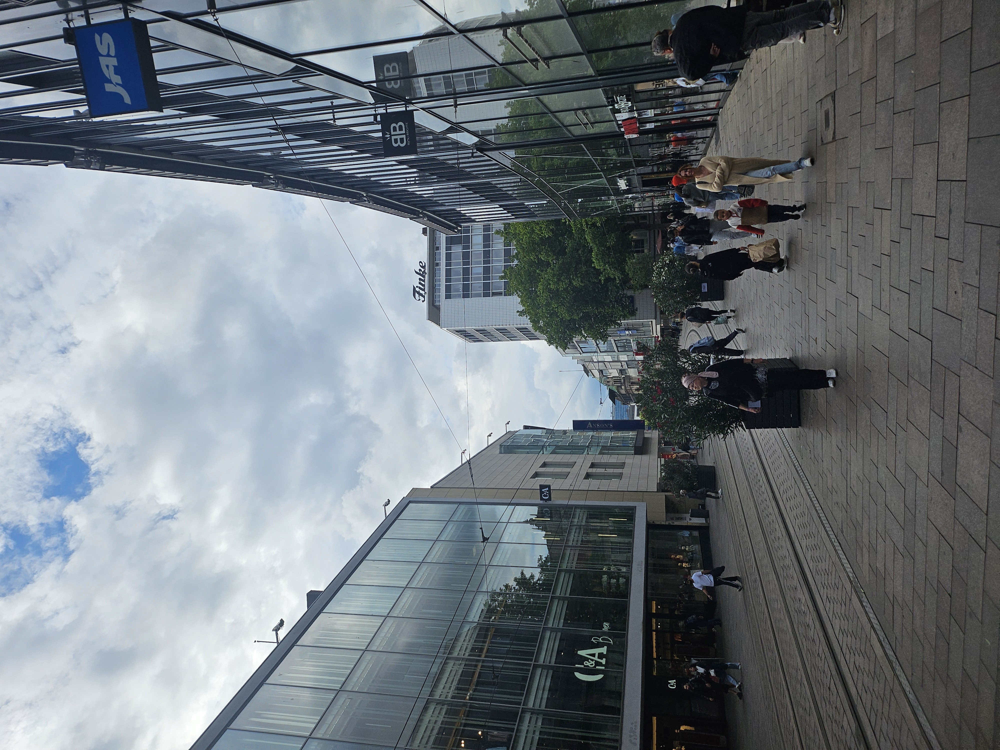
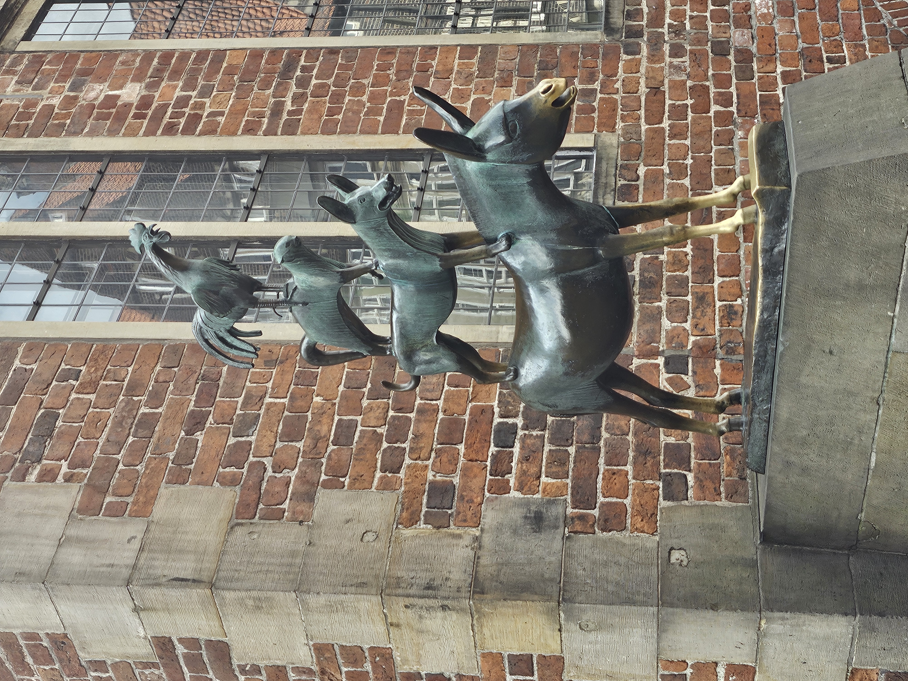
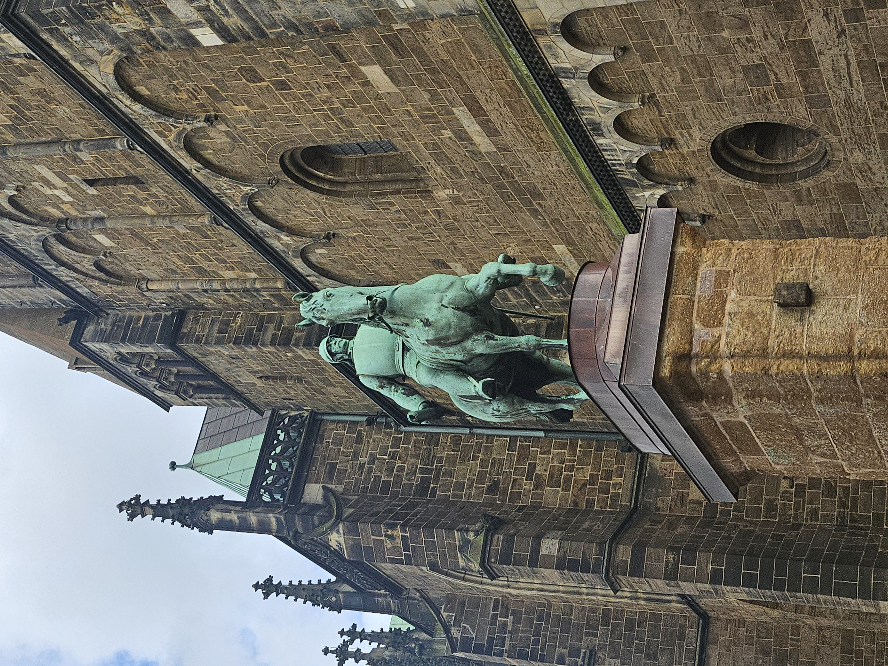
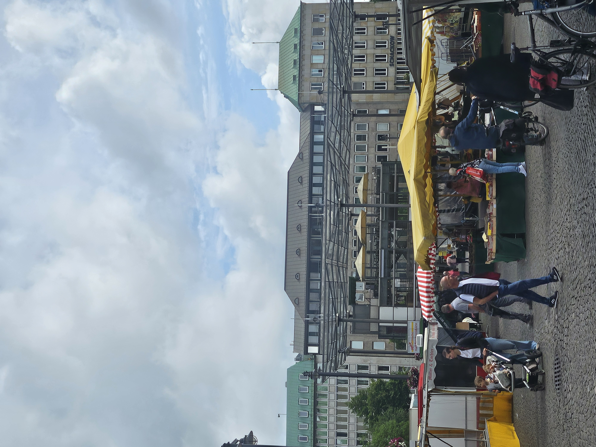
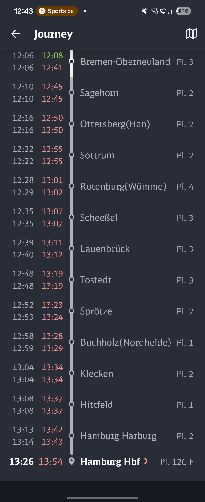

Bremen 3일차 여행
집에 돌아가는 날이다. 계획은 간단했다. 그냥 여행하면서 놓친 장소 등을 둘러보며서 다시 집으로 돌아가기로 했다.
아침 10시에 거리에 나오니 확실히 어제보다는 거리에 사람이 많았다. 생각해보니 어제 음악대 동상을 보지 못해서 Bremen에서는 그거 보고 살살 중앙역 쪽으로 가기로 했다.

지도에 광장 주변으로 위치가 표시가 되어서 살살 걸어가 보기로 했다. 숙소에서 광장까지 Straßenß-Bahn으로 두 정거장 정도고 사람도 많고 해서 한산한 거리를 걸어가 보기로 했다. 걸어가면 어제 보지 못했던 것도 보이고 가게와 골목 하나하나 볼 수도 있고 한국과 꽤나 다른 느낌을 주기에 걸어가는 것도 나쁘지 않은 것 같다.

그냥 가장 유명한 동상이다. 동화책에서 본 듯한 실루엣을 그대로 하고 있다. 이 동상을 찾으면서 왜 어제 보지 못하고 그냥 지나쳤나 곰곰이 생각을 하면서 찾았는데 찾으면 그냥 바로 그 사실을 알 수 있다. 여기 위치가 딱 중심지로 성당과 시청이 있고 다른 복합 건물이 많은데 어마 무시한 크기들 주위에 내 키에 1.3배 정도 되는 크기로 건물 사이에 위치해 있으니 당연히 안 보일 수밖에 없다…
저 동상에 하단의 당나귀 다리를 만지면 뭔.. 소원이 이루어 진다나..? 그런 미신이 있는데 얼마나 만졌으면 닳은 건지 아니면 하도 만져서 다른 곳 변색이 될 동안 저기만 색을 유지한 건지 금색으로 남아있다. 근데 주둥이는 색이 왜 저래..?

보통의 동상은 이 정도 크기에 대충 내 키에 4배는 확실히 넘을 것 같이 생겼다. 그러니 음악대 동상 찾기 난이도가 헬 이었지…

옆으로 가니 장터가 열려있어서 가서 구경도 하고 간단히 아침을 해결하기로 했다. ㅎㅎ
한국 장터와 다르게 마트를 그대로 옮겨와 야외에 펼친 듯한 느낌이 강하다. 간단하게 반찬가게(?) 같은 곳에 가서 치즈와 고기 튀김 사서 아침으로 먹었다. 하나에 2.5유로로 가성비로 아침을 간단히 끝냈다.
짜서 물은 필수였다 ㅎ

{kind=link}
{kind=link}
{kind=link}
{kind=link}
{kind=link}
{kind=link}
{kind=link}
독일 북쪽 지역에서의 인사는 “Moin”이다. 어디 가서 “Hallo”나 “Guten -” 대신 모인 한마디로 인사하면 편하다. 남쪽에서 인사를 “Servus”로 했었는데 북쪽에서 사용하면 서울에서 사투리 사용하는 촌놈을 쳐다보는 듯한 시선으로 쳐다보니 주의하시길..
가는 길에 비가 와서 잠시 피하면서 사진을 찍었다. 어릴 때 만화를 보면 피를 피하기 위해서 나무 밑에 들어가는 것을 전혀 이해하지를 못했는데 여기 독일 와서 제대로 느끼고 있다. 나뭇잎들이 촘촘하기 겹쳐서 비를 피하기에 정말 최고다. 여행 3일 동안 매일 비 오는 중이다…
{kind=link}
{kind=link}
역으로 가는 길에 숲으로 이루어진 공원이 있어서 잠시 걷다가 가기로 했다. 풍차도 있고 꽤나 한적해서 괜찮았다. 요즘 독일 내에서 시위도 많아지고 해서 경찰들이 항상 무서운 표정을 유지한 모습만 봤는데 여기 공원에서 다들 웃으면서 있는 걸 보고 왠지 모를 내적 안심(?)을 느끼면서 잠시 걷고 다시 이동했다.
{kind=link}

돌아가는 길에는 말도 많고 탈도 많았다. 하늘에 구멍이 뚫린 것 같이 비가 쏟아져서 바로 연착~ 한자리에서 1시간 있었다~!!! 안내방송이 나올 때마다 사람들은 땅을 보고 이마를 짚었다. ㅋㅋㅋ


Hamburg에 내려서 2시간이 비어서 잠시 생각하다가 예전에 독일어 수업을 하다가 교수님께서 Hamburg에 부산다리가 있다고 말씀한 게 기억이 나서 달려갔다. 도착하니 비가 그치는 매직~ 근데 바로 여우비 내려서 바로 달려서 아시아 마트로 피신했다. 아시아 마트는 어디를 가나 천국이다. ㅎㅎ 우리 동네는 구멍가게 만 해서 큰 도시 온 김에 꼭 들려야 한다. ^^
잠시 보고 집으로 갔다. 앞으로 주기적으로 올리겠습니다!